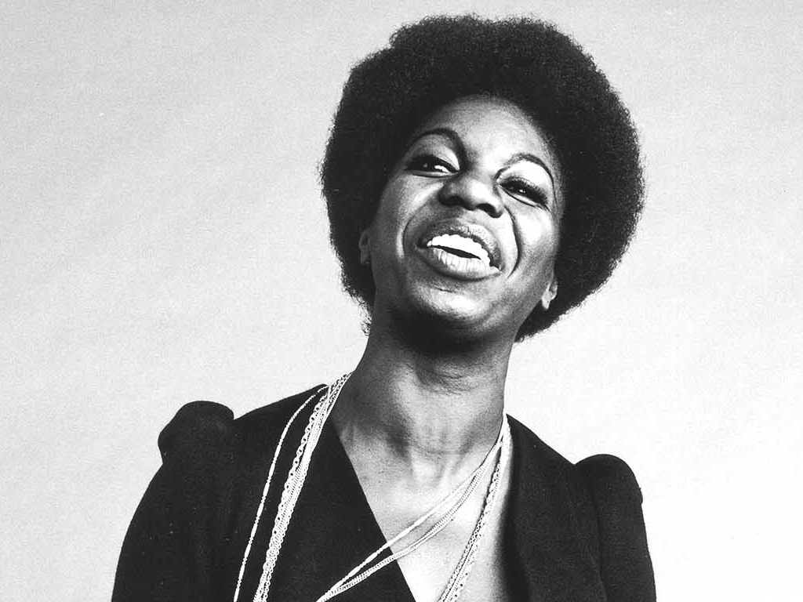

Nina Simone
“Jazz is not just music, it’s a way of life, it’s a way of being, a way of thinking.”
Here's a time line of Nina Simones life
- 1933 : Simone was born Eunice Kathleen Waymon and raised in Tryon North Carolina. Started playing the piano at age three.
- 1954 : She adopted the stage name "Nina Simone". "Nina", derived from niña, was a nickname given to her by a boyfriend named Chico and "Simone" was taken from the French actress Simone Signoret, whom she had seen in the 1952 movie Casque d'Or.
- 1959 : After the success of Little Girl Blue, Simone signed a contract with Colpix Records and recorded a multitude of studio and live albums. Colpix relinquished all creative control to her. After the release of her live album Nina Simone at Town Hall, Simone became a favorite performer in Greenwich Village. By this time, Simone performed pop music only to make money to continue her classical music studies and was indifferent about having a recording contract. She kept this attitude toward the record industry for most of her career.
- 1961 : Simone married a New York police detective, Andrew Stroud. He later became her manager and the father of her daughter Lisa, but he abused Simone psychologically and physically.
- 1964 : For the first time Nina addressed racial inequality in the United States in the song "Mississippi Goddam". This was her response to the June 12 1963 murder of Medgar Evers and the September 15 1963 bombing of the 16th Street Baptist Church in Birmingham Alabama that killed four young black girls and partially blinded a fifth. She said that the song "like throwing ten bullets back at them", becoming one of many other protest songs
- 1974 – 1993 : recorded her last album for RCA, It Is Finished, in 1974, and did not make another record until 1978, when she was persuaded to go into the recording studio by CTI Records owner Creed Taylor. The result was the album Baltimore, which, while not a commercial success, was fairly well received critically and marked a quiet artistic renaissance in Simone's recording output.
Known for her temper and frequent outbursts, in 1985 Simone fired a gun at a record company executive, whom she accused of stealing royalties. Simone said she "tried to kill him" but "missed". According to a biographer, Simone took medication for a condition from the mid-1960s on, although this was only known to a small group of intimates.
When Simone returned to the United States, she learned that a warrant had been issued for her arrest for unpaid taxes (as a protest against her country's involvement with the Vietnam War), and returned to Barbados to evade the authorities and prosecution. Simone stayed in Barbados for quite some time and she had a lengthy affair with the Prime Minister, Errol Barrow. - 2003 : Nina settled near Aix-en-Provence in southern France. She suffered from breast cancer for several years before she died age 70 in her sleep at her home in Carry-le-Rouet. Her funeral service was attended by singers Miriam Makeba and Patti LaBelle, poet Sonia Sanchez, actors Ossie Davis and Ruby Dee, and hundreds of others. Simone's ashes were scattered in several African countries. She is survived by her daughter, Lisa Celeste Stroud, an actress and singer, who took the stage name Simone, and has appeared on Broadway in Aida.
If you have time, you should read more about this incredible human being on her Wikipedia entry.